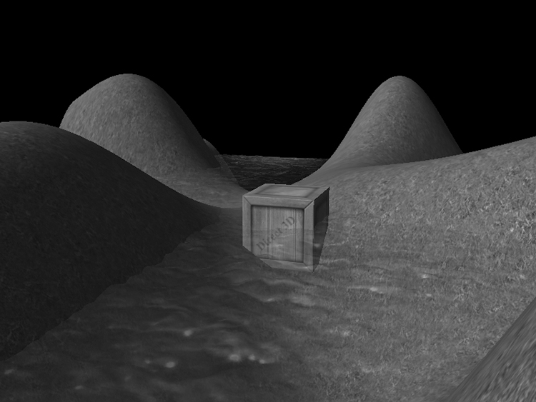
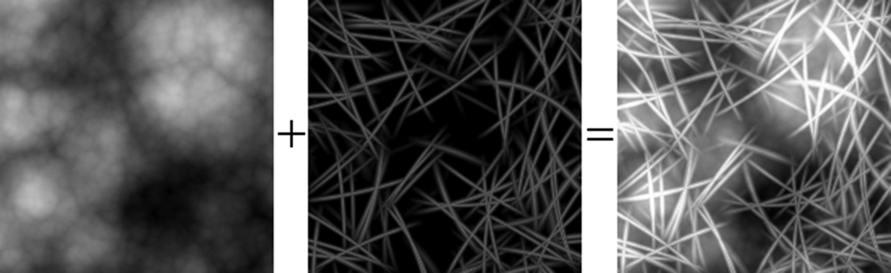
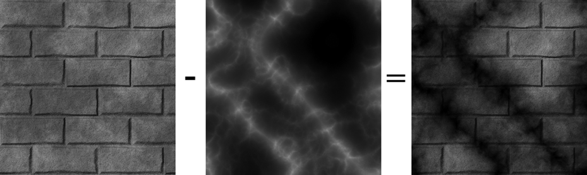
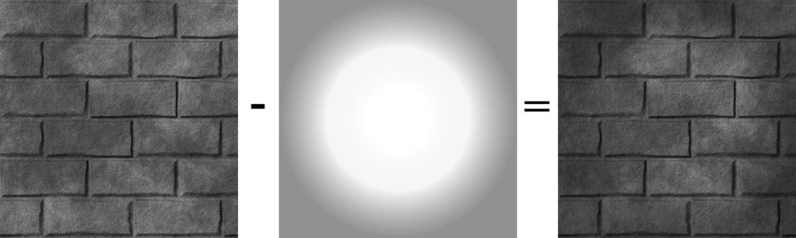
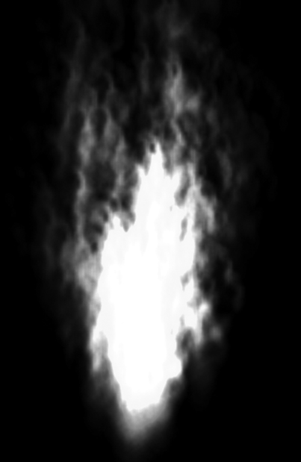
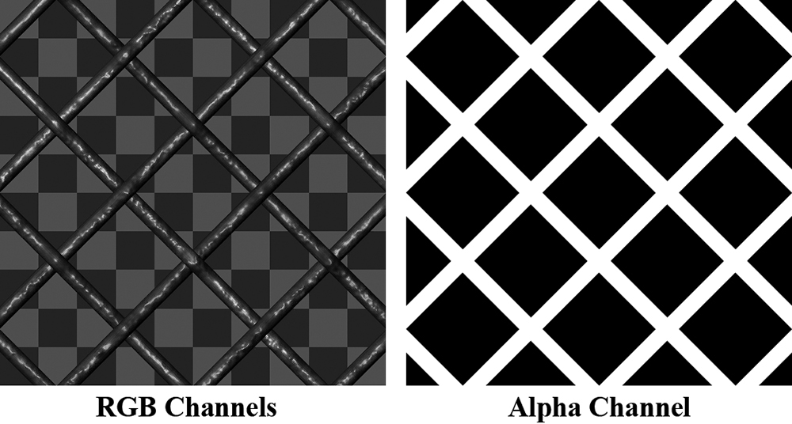
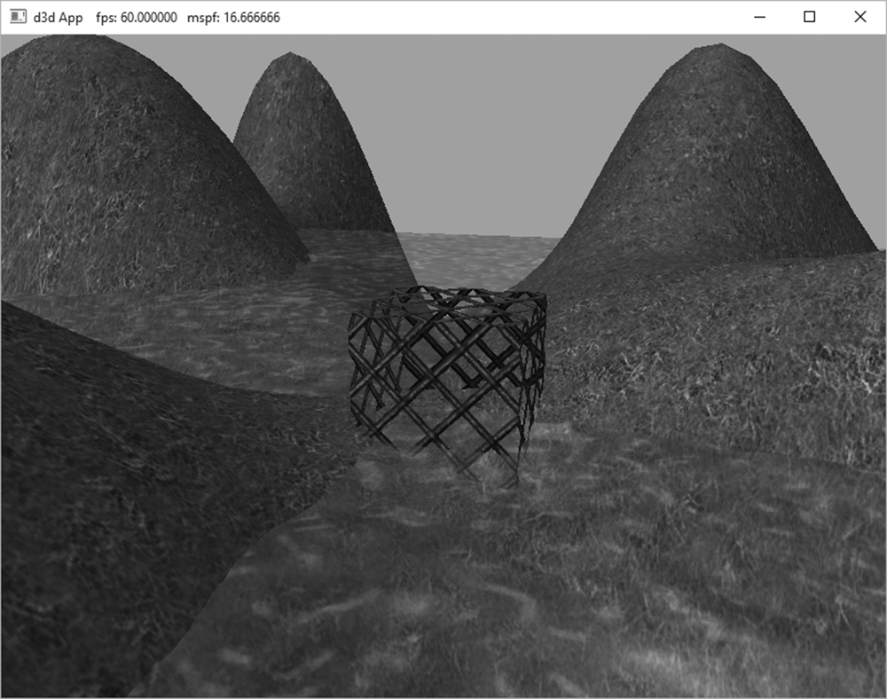
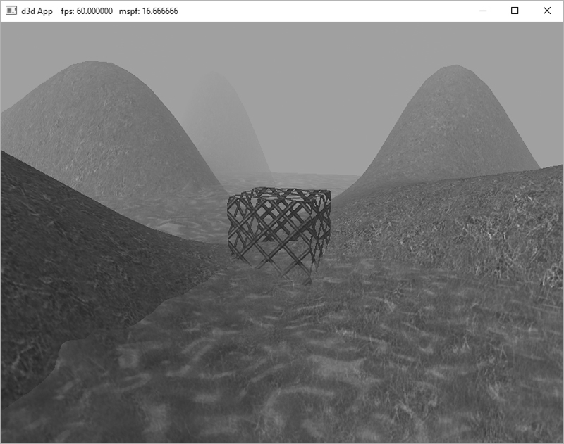
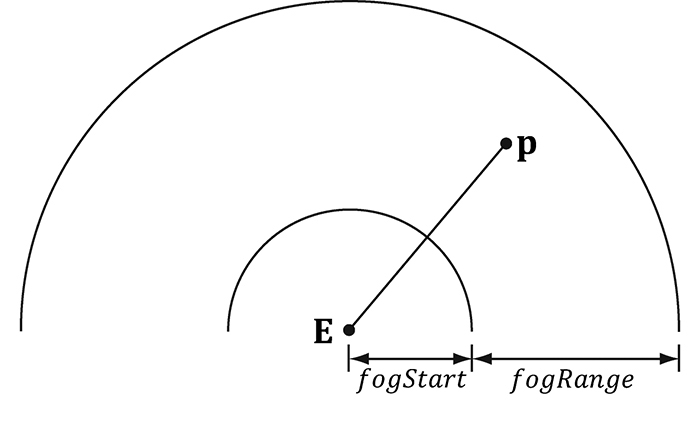
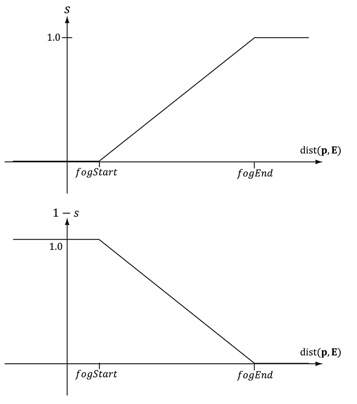

本章学习目标（Objectives）
- 理解混合方程与混合因子，掌握常见混合模式；
- 配置混合状态（BlendState），实现半透明玻璃；
- 用 alpha 通道与 clip() 做"镂空"（铁丝网）；
- 实现距离雾效。
10.1 混合方程（The Blending Equation）
输出合并阶段把"当前像素（源）"与"后台缓冲已有颜色（目标）"按公式混合：
⊕ 可以是加、减、乘、Min、Max 等；F 是混合因子。经典透明混合：
α 是不透明度：0 全透明、1 不透明。玻璃、水面、幽灵都用它。注意混合直接影响 alpha 值本身也有独立的一套设置。
10.3 混合因子（Blend Factors）
常用因子：ZERO、ONE、SRC_ALPHA、INV_SRC_ALPHA、DEST_ALPHA、DEST_COLOR 等。排列组合出各种效果——加法混合（火焰/粒子，越叠越亮）、乘法混合（越叠越暗）等。书中图示加/减/乘三种混合的视觉效果对比。
10.4 混合状态（Blend State）
混合属于 OM 阶段状态，打包进 PSO：
D3D12_BLEND_DESC transparentDesc = {};
transparentDesc.AlphaToCoverageEnable = false;
transparentDesc.IndependentBlendEnable = false;
transparentDesc.RenderTarget[0].BlendEnable = true;
transparentDesc.RenderTarget[0].SrcBlend = D3D12_BLEND_SRC_ALPHA;
transparentDesc.RenderTarget[0].DestBlend = D3D12_BLEND_INV_SRC_ALPHA;
transparentDesc.RenderTarget[0].BlendOp = D3D12_BLEND_OP_ADD;
透明物体绘制三原则：①关闭深度写入（DepthWriteMask = ZERO），但深度测试仍开；②按"由远及近"排序绘制；③不透明物体先画。
10.5 例子（Examples）
书中逐一推导：只显示源、只显示目标、加法、乘法、透明——全部用混合因子组合表达。Blend demo：玻璃水箱里放骷髅与柱子，透过玻璃能看到后面场景且玻璃有 tint 色。
10.6 alpha 通道（Alpha Channels）
除了整体透明，还能把 alpha 存在纹理里（DDS 的 alpha 通道），实现逐像素透明——树叶、铁丝网。采样后把 α 传给混合。
10.7 裁剪像素（Clipping Pixels / clip）
HLSL 的 clip(x)：x < 0 时丢弃该像素——比混合更"硬"，适合完全镂空（铁丝网孔洞、树叶）：
// 铁丝网：alpha < 0.1 的像素直接丢弃 float4 texColor = gDiffuseMap.Sample(gsamAnisotropicWrap, pin.Tex); clip(texColor.a - 0.1f);
注意 clip 会让 GPU 的提前深度测试失效一部分，慎用在大面积上。Alpha-to-Coverage（第 12 章）是它的抗锯齿替代。
10.8 雾效（Fog）
距离眼睛越远，颜色越接近雾色，营造大气感并遮住"场景尽头"：
在像素着色器里实现（书中在 PS 尾部插雾）。Blend demo 开雾前后对比一目了然。
本章小结
- 混合发生在 OM 阶段；透明 = SRC_ALPHA + INV_SRC_ALPHA + ADD。
- 透明物绘制：关深度写、先不透明后透明、由远及近排序。
- clip() 硬镂空（铁丝网/树叶），alpha 通道提供逐像素 α。
- 雾 = 距离插值到雾色，在 PS 完成。
🖼️ 原书插图（10 张，点击展开）









